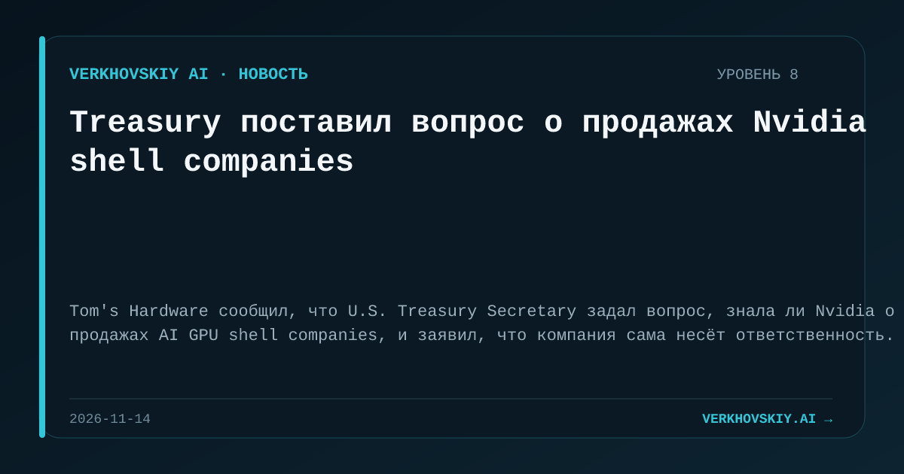

Treasury поставил вопрос о продажах Nvidia shell companies
Tom's Hardware сообщил, что U.S. Treasury Secretary задал вопрос, знала ли Nvidia о продажах AI GPU shell companies, и заявил, что компания сама несёт ответственность.

Tom's Hardware сообщил, что U.S. Treasury Secretary задал вопрос, знала ли Nvidia о продажах AI GPU shell companies, и заявил, что компания сама несёт ответственность.